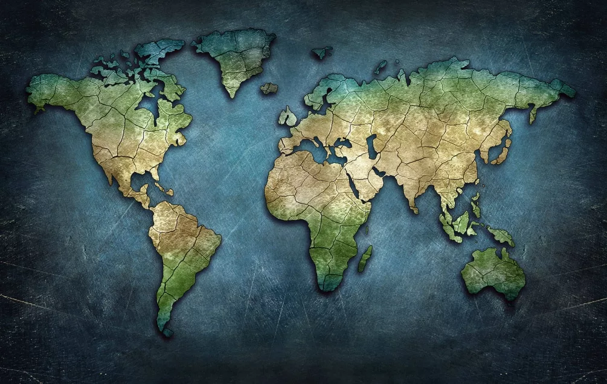

Цифровая карта вторичного сырья
Платформа нового поколения для экономики замкнутого цикла. Размещайте ненужный пластик, макулатуру и технику на карте, а переработчики и волонтеры смогут быстро найти и забрать их.
Платформа нового поколения для экономики замкнутого цикла. Размещайте ненужный пластик, макулатуру и технику на карте, а переработчики и волонтеры смогут быстро найти и забрать их.

Пользователи платформы разместили более 12 тысяч объявлений о передаче пластика, макулатуры, стекла и электроники на переработку.
На карте EcoMap отображаются пункты приема вторсырья, волонтерские центры и организации по переработке отходов.
Более 320 тонн вторичного сырья было передано пользователями платформы для дальнейшей переработки и повторного использования.
По расчетам платформы, переработка собранного вторсырья позволила сократить выбросы CO₂ почти на 1920 тонн.